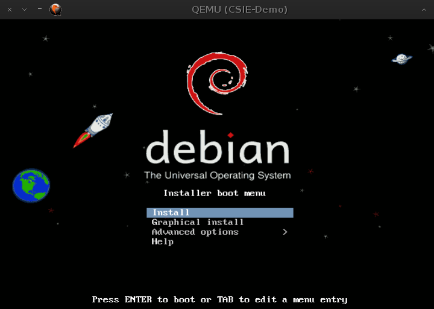

安裝首頁，選擇 install
本實驗示範如何運用 Kernel-based Virtual Machine (KVM) 建立虛擬叢集環境.
|
|
| Virtual Machine | |
|---|---|
| Location | 821 機房伺服器 |
| CPU | vcpu*2 |
| Memory | 4G |
| Disk spaces | 80G (QCOW2 Format) |
| O.S. | Debian Jessie |
本實作內容以 step-by-step 方式寫作，盡可能地讓同學們以複製貼上方式完成指令輸入。
上機實習時使用教室電腦，另外讓同學練習用的機器是機房所提供的虛擬機器。
練習完本實作之後，同學們應可以學會基本建立與操作虛擬機器。
為了避免輸入錯誤以及方便區分 IP 使用環境，我們使用下列幾個按鈕來快速取代各個不同 IP。
您的機器參數:
Username ： [USERNAME]
Code number ： [code-num]
Host IP ： [Host-IP]
VM IP ： [VM-IP]
VM MAC address ： [Random MAC address]
Gateway ： [Gateway-IP]
若您使用 MS Windows, 請參閱說明 Login Server From Windows.
Open a terminal emulator and then type the following commands.
ssh [USERNAME]@cloud.cs.nchu.edu.tw -X -p [PortNUM]
必須支援 vmx 或是 svm 指令集才有辦法使用硬體虛擬化加速, Intel 提供的指令集為 vmx 而 AMD 則是 svm.
egrep '(vmx|svm)' --color=always /proc/cpuinfo
flags : fpu de pse tsc msr pae mce cx8 apic sep mtrr pge mca cmov pat
pse36 clflush mmx fxsr sse sse2 ht syscall nx lm nopl pni cx16 popcnt hypervisor
lahf_lm cmp_legacy svm abm sse4a
sudo aptitude update
sudo aptitude install qemu-kvm uml-utilities socat screen
lsmod | grep kvm
kvm_amd 47218 0
kvm 287662 1 kvm_amd
若沒有自動載入可以下列指令手動載入 (svm 對應到 kvm_amd, vmx 則是 kvm_intel)
sudo modprobe kvm_amd
sudo adduser [USERNAME] kvm
Adding user `[USERNAME]' to group `kvm' ...
Adding user [USERNAME] to group kvm
Done.
exit
ssh [USERNAME]@cloud.cs.nchu.edu.tw -X -p [PortNUM]
mkdir ~/KVM
cd ~/KVM
kvm
雖然這樣就能開啟一部虛擬機器, 但是太陽春了沒有辦法使用, 接下來我們幫他加入硬碟並且安裝作業系統.
mkdir img
cd img
qemu-img create vm001.img 5G
Formatting 'vm001.img', fmt=raw size=5368709120
在此我們安裝最新的測試版本, 虛擬機器的好處就是拿來測試不穩定的軟體, 縱使壞了我們很快又能產生新的. (穩定版為 debian-7.6.0-amd64-netinst.iso)
wget http://mirror.cs.nchu.edu.tw/debian-testing-amd64-netinst.iso
若在校外我們可以從 Debian 官方網站下載
wget http://cdimage.debian.org/cdimage/weekly-builds/amd64/iso-cd/debian-testing-amd64-netinst.iso
由於遠端使用若傳回圖形環境會變得緩慢, 在此我們借助 vnc 來幫我們加速.
kvm -m 1024M -cdrom debian-testing-amd64-netinst.iso -hda vm001.img -vnc :1
打開遠端連線網頁 cloudwebui 並且登入, 選擇 VM-編號
安裝過程請參考以下各圖 (圖文不相同時, 以文字為主, 切勿安裝桌面環境！)
|
01
 | 安裝首頁，選擇 install |
先以 [USERNAME] 帳號登入確認可以正常使用, 接著關閉虛擬機器.
註: 接下來指令是下在虛擬機器當中！
su
init 0
至此已經完成 VM 作業系統安裝, 接下來我們要進一步加強虛擬網路環境.
更改 sources.list 增加 deb-src 來源, 以便抓取原始碼編譯.
sudo nano /etc/apt/sources.list
deb http://mirror.cs.nchu.edu.tw/debian/ jessie main contrib non-free
deb http://mirror.cs.nchu.edu.tw/debian/ jessie-updates main contrib non-free
deb http://mirror.cs.nchu.edu.tw/debian/ jessie-proposed-updates main contrib non-free
deb-src http://mirror.cs.nchu.edu.tw/debian/ jessie main
sudo aptitude update
sudo aptitude install build-essential module-assistant
sudo apt-get build-dep openvswitch
下載原始碼.
wget http://mirror.cs.nchu.edu.tw/openvswitch-latest.tar.gz
將 Open vSwitch 原始碼編譯成為 Debian 安裝檔格式 (*.deb).
tar zxvf openvswitch-*.tar.gz
rm openvswitch-*.tar.gz
cd openvswitch-*
fakeroot debian/rules binary
echo $?
0
安裝 Open vSwitch 及相依套件 (除了 debug 套件都安裝).
cd ..
sudo aptitude update
sudo aptitude safe-upgrade
sudo aptitude install dkms ipsec-tools racoon uuid-runtime python-twisted-web
sudo dpkg -i openvswitch-ipsec_*_amd64.deb openvswitch-pki_*_all.deb \
openvswitch-common_*_amd64.deb openvswitch-switch_*_amd64.deb \
openvswitch-datapath-dkms_*_all.deb openvswitch-test_*_all.deb \
openvswitch-datapath-source_*_all.deb openvswitch-vtep_*_amd64.deb \
python-openvswitch_*_all.deb
檢查 module 是否正常載入, 若沒有正常載入重新檢查前面步驟或重開機試試.
lsmod | grep openvswitch
openvswitch 69167 0
gre 12777 1 openvswitch
vxlan 35023 1 openvswitch
libcrc32c 12426 1 openvswitch
啟動 Open vSwitch 並設定 IP address
sudo ovs-vsctl show
ovs-vsctl: unix:/var/run/openvswitch/db.sock: database connection failed (No such file or directory)
若出現此訊息表示 Open vSwitch 尚未正常初始化, 重新開機讓它重整一次
sudo init 6&&exit
sudo ovs-vsctl show
7d8cb536-a3b7-4d3a-b5b7-e41f0c87f654
ovs_version: "2.3.0"
先檢視一下目前網路狀態, 稍後建立完虛擬網路之後可以比對.
/sbin/ifconfig
eth0 Link encap:Ethernet HWaddr 1c:c1:de:a7:fd:46
inet addr:[Host-IP] Bcast:172.31.255.255 Mask:255.240.0.0
inet6 addr: fe80::1ec1:deff:fea7:fd46/64 Scope:Link
UP BROADCAST RUNNING MULTICAST MTU:1500 Metric:1
RX packets:77 errors:0 dropped:0 overruns:0 frame:0
TX packets:73 errors:0 dropped:0 overruns:0 carrier:0
collisions:0 txqueuelen:1000
RX bytes:9650 (9.4 KiB) TX bytes:11057 (10.7 KiB)
lo Link encap:Local Loopback
inet addr:127.0.0.1 Mask:255.0.0.0
inet6 addr: ::1/128 Scope:Host
UP LOOPBACK RUNNING MTU:65536 Metric:1
RX packets:0 errors:0 dropped:0 overruns:0 frame:0
TX packets:0 errors:0 dropped:0 overruns:0 carrier:0
collisions:0 txqueuelen:0
RX bytes:0 (0.0 B) TX bytes:0 (0.0 B)
/sbin/route -n
Destination Gateway Genmask Flags Metric Ref Use Iface
0.0.0.0 172.31.255.254 0.0.0.0 UG 0 0 0 eth0
172.16.0.0 0.0.0.0 255.240.0.0 U 0 0 0 eth0
建立 bridge 供串接實體網卡與虛擬網卡使用.
sudo ovs-vsctl add-br br0
sudo ovs-vsctl add-port br0 eth0; sudo ifconfig eth0 0.0.0.0; sudo ifconfig br0 [Host-IP]/12; sudo route add default gw [Gateway-IP]
sudo ovs-vsctl show
cc1170c9-0f10-45db-87af-44cf82b714b2
Bridge "br0"
Port "br0"
Interface "br0"
type: internal
Port "eth0"
Interface "eth0"
ovs_version: "2.0.90"
/sbin/ifconfig
br0 Link encap:Ethernet HWaddr 1c:c1:de:a7:fd:46
inet addr:[Host-IP] Bcast:172.31.255.255 Mask:255.240.0.0
inet6 addr: fe80::1ec1:deff:fea7:fd46/64 Scope:Link
UP BROADCAST RUNNING MULTICAST MTU:1500 Metric:1
RX packets:23 errors:0 dropped:0 overruns:0 frame:0
TX packets:27 errors:0 dropped:0 overruns:0 carrier:0
collisions:0 txqueuelen:0
RX bytes:1764 (1.7 KiB) TX bytes:3214 (3.1 KiB)
eth0 Link encap:Ethernet HWaddr 1c:c1:de:a7:fd:46
inet6 addr: fe80::1ec1:deff:fea7:fd46/64 Scope:Link
UP BROADCAST RUNNING MULTICAST MTU:1500 Metric:1
RX packets:266 errors:0 dropped:0 overruns:0 frame:0
TX packets:251 errors:0 dropped:0 overruns:0 carrier:0
collisions:0 txqueuelen:1000
RX bytes:26278 (25.6 KiB) TX bytes:31109 (30.3 KiB)
lo Link encap:Local Loopback
inet addr:127.0.0.1 Mask:255.0.0.0
inet6 addr: ::1/128 Scope:Host
UP LOOPBACK RUNNING MTU:65536 Metric:1
RX packets:0 errors:0 dropped:0 overruns:0 frame:0
TX packets:0 errors:0 dropped:0 overruns:0 carrier:0
collisions:0 txqueuelen:0
RX bytes:0 (0.0 B) TX bytes:0 (0.0 B)
/sbin/route -n
Kernel IP routing table
Destination Gateway Genmask Flags Metric Ref Use Iface
0.0.0.0 172.31.255.254 0.0.0.0 UG 0 0 0 br0
172.16.0.0 0.0.0.0 255.240.0.0 U 0 0 0 br0
萬一參數設定錯誤網路掛掉了怎麼辦!! 這個時候請打開遠端連線網頁 cloudwebui 並且登入, 選擇 Host-編號. 使用網頁界面登入 console 端進行修復.
若系統中已無其他 VM 存在時，關閉 Open vSwitch 歸還系統資源。
sudo ovs-vsctl del-port br0 eth0; sudo ifconfig br0 down; sudo ovs-vsctl del-br br0; sudo ifconfig eth0 [Host-IP]; sudo route add default gw [Gateway-IP]
sudo ovs-vsctl show
7d8cb536-a3b7-4d3a-b5b7-e41f0c87f654
ovs_version: "2.3.0"
由於每次開關機都要做此設定, 相當麻煩而且手動輸入容易發生錯誤, 因此我們將指令寫成 shell script 方便將來使用.
mkdir ~/KVM/bin
cd ~/KVM/bin
nano ovs-start
#! /bin/bash
sudo ovs-vsctl add-br br0
sudo ovs-vsctl add-port br0 eth0
sudo ifconfig eth0 0.0.0.0
sudo ifconfig br0 [Host-IP]/12
sudo route add default gw [Gateway-IP]
sudo ovs-vsctl show
nano ovs-stop
#! /bin/bash
sudo ovs-vsctl del-port br0 eth0
sudo ifconfig br0 down
sudo ovs-vsctl del-br br0
sudo ifconfig eth0 [Host-IP]/12
sudo route add default gw [Gateway-IP]
sudo ovs-vsctl show
chmod +x ovs-st*
ls -l
total 8
-rwxr-xr-x 1 [USERNAME] [USERNAME] 195 Sep 22 04:53 ovs-start
-rwxr-xr-x 1 [USERNAME] [USERNAME] 189 Sep 22 04:53 ovs-stop
~/KVM/bin/ovs-start
在此我們需要使用 /dev/net/tun 裝置來建立虛擬網卡, tun/tap 為 uml-utilities 套件所提供. 首先檢查權限使否足夠使用 (666, crw-rw-rw-).
ls -l /dev/net/tun
crw-rw-rw- 1 root root 10, 200 Sep 22 03:31 /dev/net/tun
若權限不足則用以下指令來修改權限.
sudo chmod 666 /dev/net/tun
建立 tap0 虛擬網路卡
sudo tunctl -u [USERNAME] -t tap0
sudo ifconfig tap0 up
sudo ovs-vsctl add-port br0 tap0
修改 KVM 開機參數，令其使用 Open vSwitch 連接網路
cd ~/KVM/img
kvm -m 1024M \
-net nic,vlan=0,netdev=tap0,macaddr=[MAC-address],model=virtio \
-netdev tap,id=tap0,ifname=tap0,script=no \
-vnc :1 \
-hda vm001.img &
打開遠端連線網頁 cloudwebui 並且登入, 選擇 VM-編號. 使用 [USERNAME] 帳號登入虛擬機器, 接著設定虛擬機器 IP address, DNS server.
su
nano /etc/network/interfaces
# This file describes the network interfaces available on your system
# and how to activate them. For more information, see interfaces(5).
# The loopback network interface
auto lo
iface lo inet loopback
# The primary network interface
auto eth0
iface eth0 inet static
address [VM-IP]
netmask 255.240.0.0
gateway [Gateway-IP]
nano /etc/resolv.conf
nameserver 140.120.13.1
nameserver 140.120.1.2
nameserver 8.8.8.8
init 6
再次在網頁界面使用 [USERNAME] 帳號登入虛擬機器, 測試網路是否有通.
ping -c 3 www.google.com
PING www.google.com (74.125.23.104) 56(84) bytes of data.
64 bytes from tg-in-f104.1e100.net (74.125.23.104): icmp_seq=1 ttl=43 time=13.7 ms
64 bytes from tg-in-f104.1e100.net (74.125.23.104): icmp_seq=2 ttl=43 time=16.6 ms
64 bytes from tg-in-f104.1e100.net (74.125.23.104): icmp_seq=3 ttl=43 time=12.9 ms
--- www.google.com ping statistics ---
3 packets transmitted, 3 received, 0% packet loss, time 2003ms
rtt min/avg/max/mdev = 12.951/14.452/16.647/1.592 ms
最後讓我們試試看使用 ssh 來遠端登入虛擬機器.
ssh [USERNAME]@cloud.cs.nchu.edu.tw -X -p [VMPortNUM]
關閉虛擬機器
su
init 0
關閉虛擬網卡
sudo ovs-vsctl del-port tap0
sudo ifconfig tap0 down
sudo tunctl -d tap0
Set 'tap0' nonpersistent
同樣地使用先前建立的 script 來還原網路.
~/KVM/bin/ovs-stop
7d8cb536-a3b7-4d3a-b5b7-e41f0c87f654
ovs_version: "2.3.0"
做到這裡大家應該發現到, 開關虛擬機器所需指令以及參數眾多, 徒手下達指令開關機不僅沒有效率, 也容易出錯. 因此, 通常我們會使用 Shell Script 來管理虛擬機器. 註: 接下來的步驟必須完成先前內容才可正常執行!
首先下載 Scripts 並且解壓縮到我們的目錄裡.
cd ~/KVM
wget http://mirror.cs.nchu.edu.tw/KVM-tool-lite-latest.tgz
tar zxvf KVM-tool-lite-latest.tgz
rm KVM-tool-lite-latest.tgz